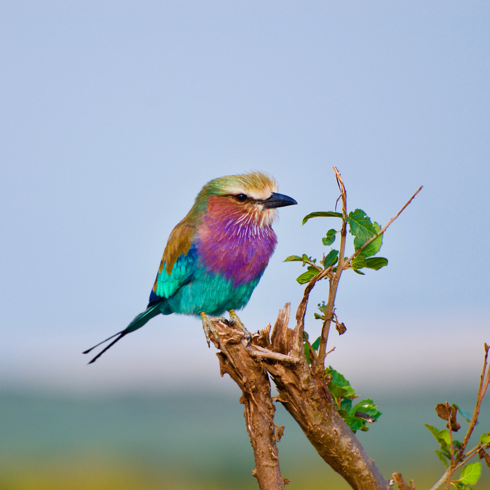
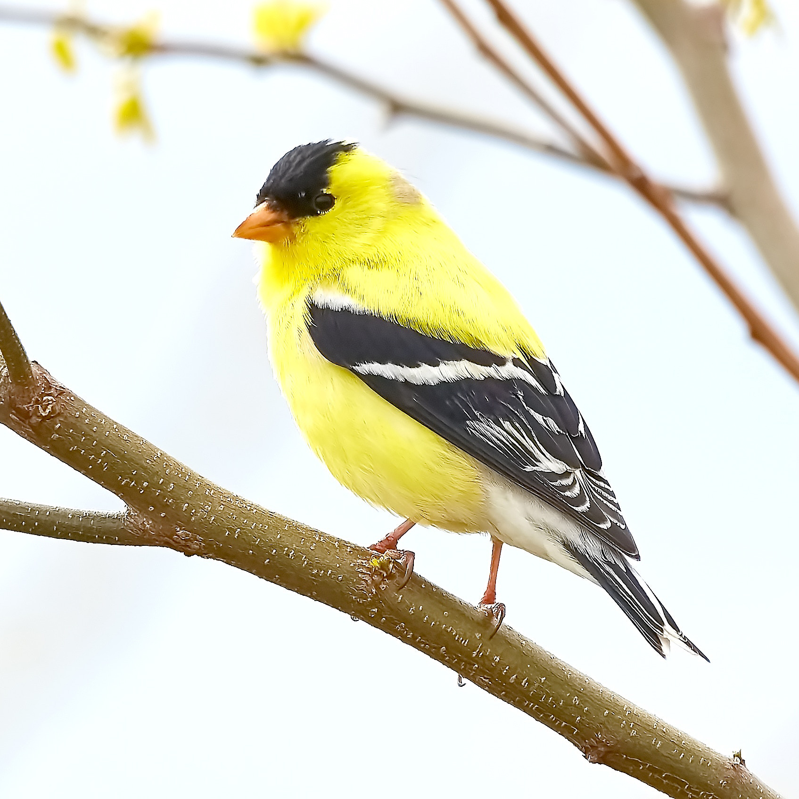
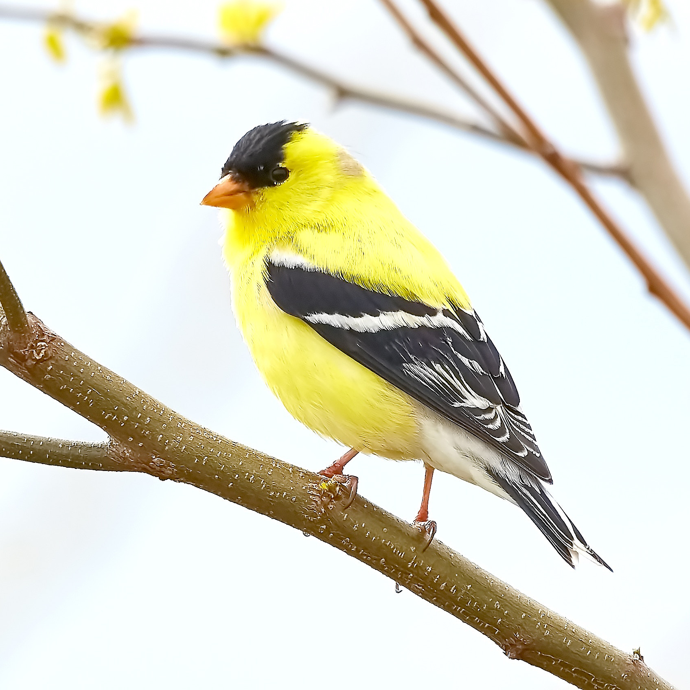
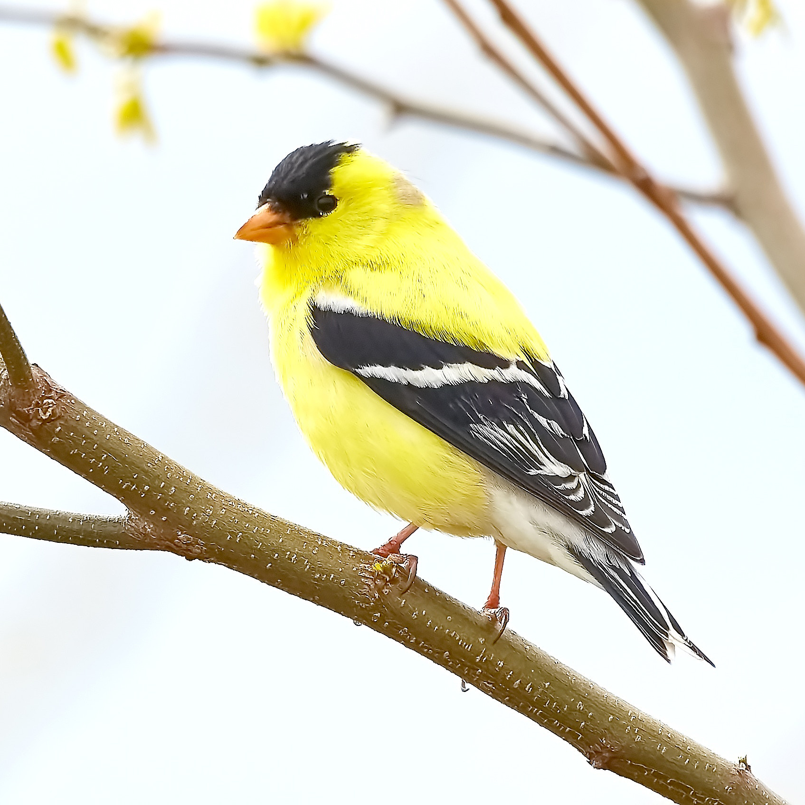

BIRDS
Owls cannot move their eyes but they can rotate their head 270 degrees
There are over 10,000 bird species worldwide
Puffins are also known as Sea Parrots and their beaks change color throughout the year




 
